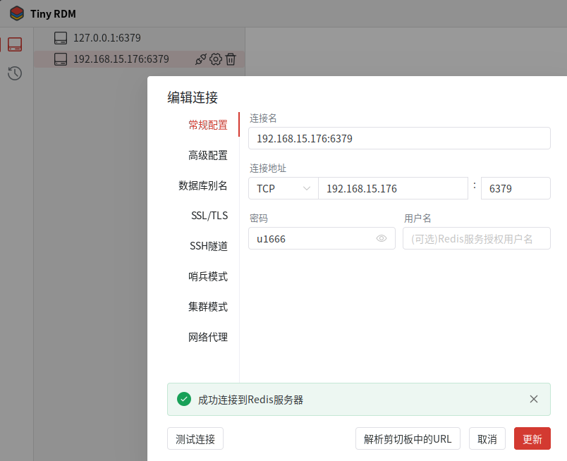

Redis
官网：Redis - The Real-time Data Platform
最近听说
Redis 替代品
- GitHub - microsoft/garnet
- GitHub - Snapchat/KeyDB: A Multithreaded Fork of Redis
- GitHub - valkey-io/valkey
- Redict | Redict
- GitHub - dragonflydb/dragonfly: A modern replacement for Redis and Memcached
Redis 可视化管理工具
参考：我最爱用的几款 Redis 可视化管理工具！好用到飞起！！ - 知乎
- GitHub - tiny-craft/tiny-rdm: A Modern Redis GUI Client | Tiny RDM | Redis Desktop Manager
- GitHub - RedisInsight/RedisInsight: Redis GUI by Redis | RedisInsight - The Best Redis GUI
Ubuntu 22.04
该章节记录一下
安装
sudo apt update
sudo apt install redis-server
检查版本
安装结束之后，首先检查一下版本
redis-cli --version
redis-server --version
apt policy redis-server

查看服务状态
sudo systemctl status redis-server
# 备用
sudo systemctl start redis-server
sudo systemctl stop redis-server
sudo systemctl restart redis-server
sudo systemctl enable redis-server

测试本地连接
为了测试本地连接和下面的远程连接，特意搜了一下GUI，原来使用的软件太不好看了。连接过程比较简单直接上图：

设置远程连接和密码
默认不支持远程连接并且也没有密码，需要修改一下配置文件，
# 修改权限
sudo chmod -R 777 /etc/redis
# 允许远程连接
# 在文件中搜索 bind 127.0.0.1，修改如下（既可以本地，又可以远程）：
bind 192.168.xxx.xxx 127.0.0.1 ::1
# 设置密码
# 搜索“# requirepass foobared”，修改如下：
requirepass u1666
# 重启服务
sudo systemctl restart redis-server
# ？？？这种方式无论是IP地址还是localhost都不用输入密码
redis-cli -h localhost -p 6379

测试远程连接
首先试一下在本机使用IP地址连接Redis

在测试一下其他电脑远程连接Redis